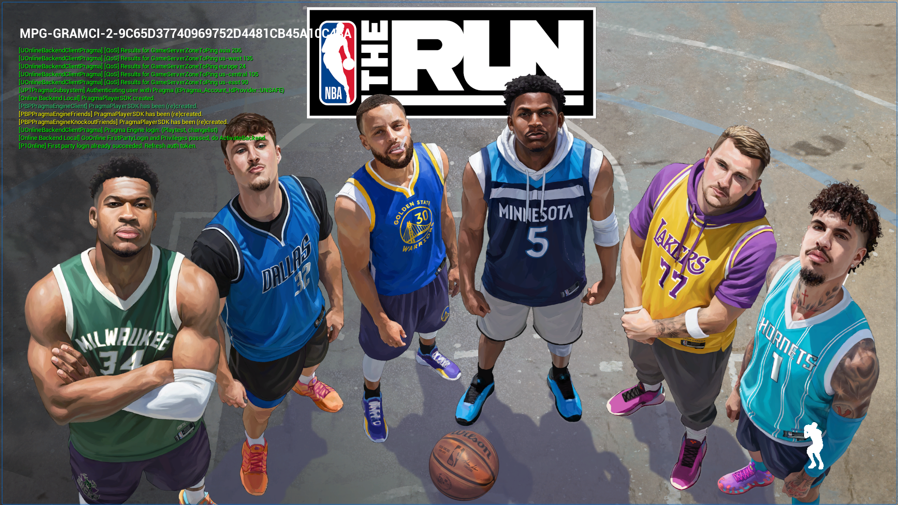
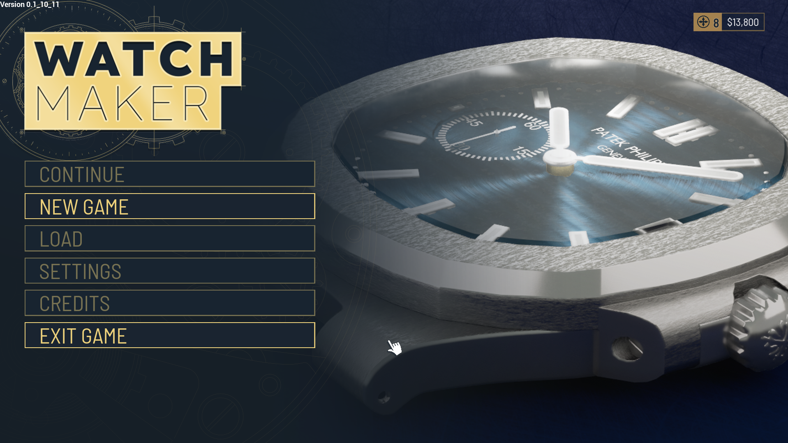
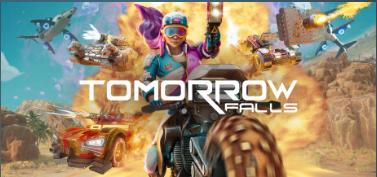
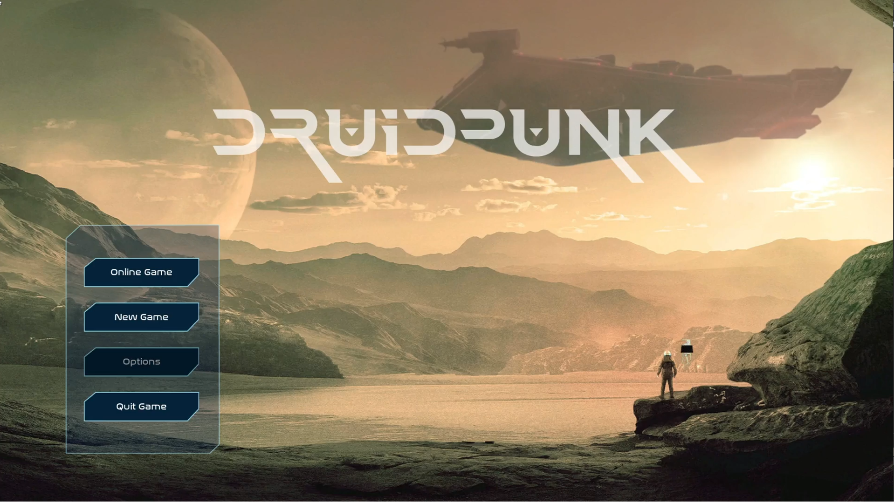
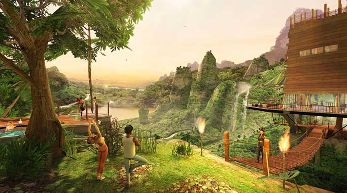
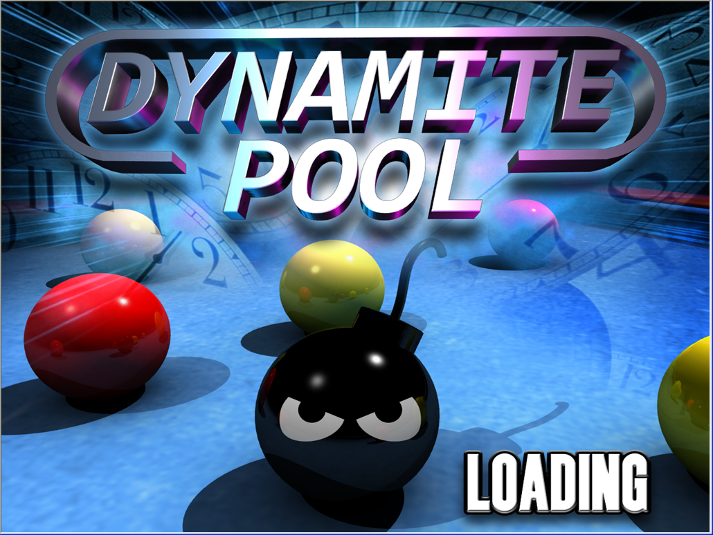
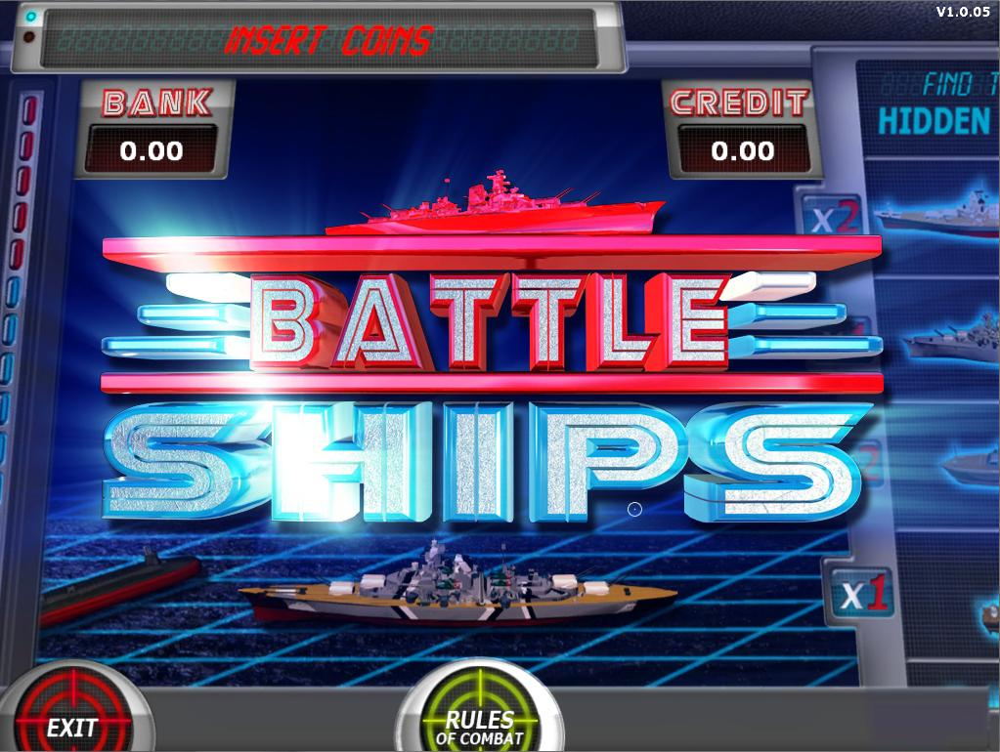
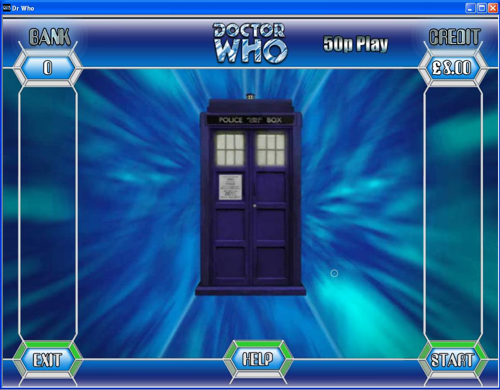

Professional Projects
Click the title of game to see more detailsNBA The Run
|  |
Language/IDE/Platforms: C++ / Unreal Engine 5.6 / PS5, XBOX, Steam Project Duration: Oct 2024 - July 2026 Client: Play By Play Studios My part on the game has been leading the development of the UI/UX. The game was built in Unreal Engine 5. I also worked on optimizing of the character loading. Originally built on Unreal Networking I worked on the first prototype demoed to 2K, right through to the released version on PS5, XBOX and Steam. I built a character selection and customiser, an unlock shop, settings menus, splash screens, social hub and animated intros and outros. I have also worked closely with tech artists on animations throughout the game. |
Watchmaker
|  |
Language/IDE/Platforms: C++ / Unreal Engine 5 / PC Project Duration: Apr 2024 - Oct 2024 Client: MPG I worked in a small team developing a prototype aimed at someone interested in launching a watch making simulation. Take on the role of a watchmaker, repairing a watch, from simple case cleaning, to replacement of a spring in the time mechanism itself. Aquire credit to unlock more sophisticated time pieces. I worked on the mechanics of taking out and putting the watch back together along with the various camera systems |
Disco

Dead Lift
Tomorrow Falls
|  |
Language/IDE/Platforms: C++ / Unreal Engine 4 / PC Project Duration: Oct 2022 - Mar 2023 Client: Wargaming Tomorrow falls was a AAA 12 vs 12 vehicle combat based online multiplayer game. Play as a f*** off mammoth tank which will pack a punch but will move like the continent that it is, or be brave and take the bike Combat is intense with many different abilities with varying time to deploy the weapons. Winning is all about teamwork My team was tasked with redeveloping the UI for a game close to beta. I was also given work on the tools/tech art side given my tech art and pipeline knowledge. This involved working on the exporters and plugins for photoshop in python, allowing them to be exported directly into unreal.
|
Druid Punks
|  |
Language/IDE/Platforms: C++ / Unreal Engine 4 / PC Project Duration:Mar 2022 - Oct 2022 Client: MPG A first person survival game developed as part of a gamejam |
Avakin Life
|  |
Language/IDE/Platforms: C# / Unity 4-2017 / Android , IOS Project Duration: Apr 2016 - Sept 2019 Client: Lockwood Publishing My part on the game was develop better tech where needed. The game was built in Unity and required a large number of plugins, with a backend and full content CDN. I worked on shaders for the environments and characters in addition to this (the water for example in the picture). These shaders were more optimised than the standard unity shaders as they were written to work with the particular lighting used in Avakin. Other tech I worked on included camera systems and automated tools to navigate the environments and use image processing filters to compare scenes following engine updates. I also implemented SVG integration to optimise the UI |
Dynamite Pool
|  |
Language/IDE/Platforms: C++ OpenGL / Visual Studio 2008 / PC Project Duration: Apr 2011-June 2011 Client: Games Warehouse I developed a 3D skill-based pool game. This game wasn't released in the end, although the idea here was to pot all balls before they exploded! The game allowed one or two players and also included a series of bonuses which could appear over pockets to change the dynamics of the game. I used Newton Game Dynamics for physics simulation. Older hardware used billboarding to render physics geometry. |
Battleships
|  |
Language/IDE/Platforms: C++ OpenGL / Visual Studio 2003 / PC Project Duration: Feb 2009-Mar 2009 Client: Games Warehouse This project was an SWP (Skill with Prize) game I developed which performed very well on site. The game is based on the popular boardgame by MB, where the player has to sink his opponent's fleet by firing missiles at different coordinates on the board. This version of the game didn't give the player his own fleet, just required them to sink all the computer's ships and answer questions correctly upon missing a ship (or a bonus). The game included a water simulation which was rendered in 3D and worked on some old hardware. Once the entire fleet of ships had been sunk, players were taken to another board where they win money by firing at coordinates on a new section of sea. Here they lose the game by hitting a mine but get to bank values by finding life boats. The game was also released in the US, and was followed up with a sequel. |
Dr Who
|  |
Language/IDE: C++ OpenGL / Visual Studio 2003
Project Duration: Aug 2008-Nov 2008 Client: Games Warehouse This project was an SWP I developed working alongside two other developers. My responsibility on the project was a number of mini games. Some of these were puzzle games, others reaction based games. This game also involved some effects development such as a warp effect which used multiple screen buffers and various tile effects for simple explosions on images. The idea behind the game was to destroy enemies by answering questions correctly. Mini games allowed players to collect lifelines in order to help with questions. Since this game was licensed from the BBC we had to stick to certain styles. |